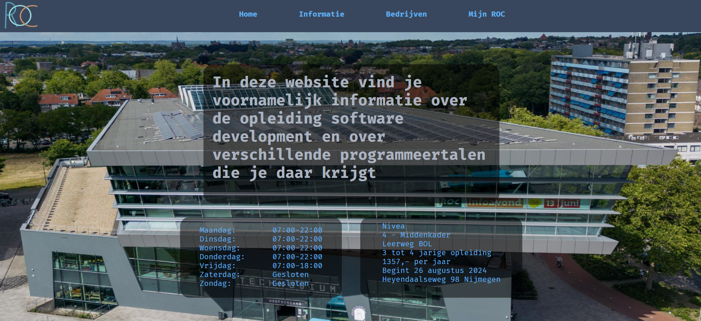

Over mij
Welkom op mijn website! Mijn naam is Manuel Raaijmakers, en ik ben verheugd dat je hier bent. Laat me je wat meer vertellen over de persoon achter deze website. Ik ben 16 jaar en volg de opleiding software developer in het ROC Nijmegen. Ik heb hiervoor gekozen, omdat ik altijd al handig was met technologie en het ook altijd erg leuk vond. Programeren vind ik al helemaal leuk, omdat je dan alles kan maken wat je ook maar wilt binnen je computer.
mijn project
Hier onder zie je alvast een voorproefje van mijn Portfolio. Deze website had ik gemaakt in een groep van 3 tijdens een projectweek op school waar we een eigen versie van de opleiding website moesten maken. mocht je nog meer van mijn werk willen zien click dan vooral door op de porfolio knop om de rest te zien.
